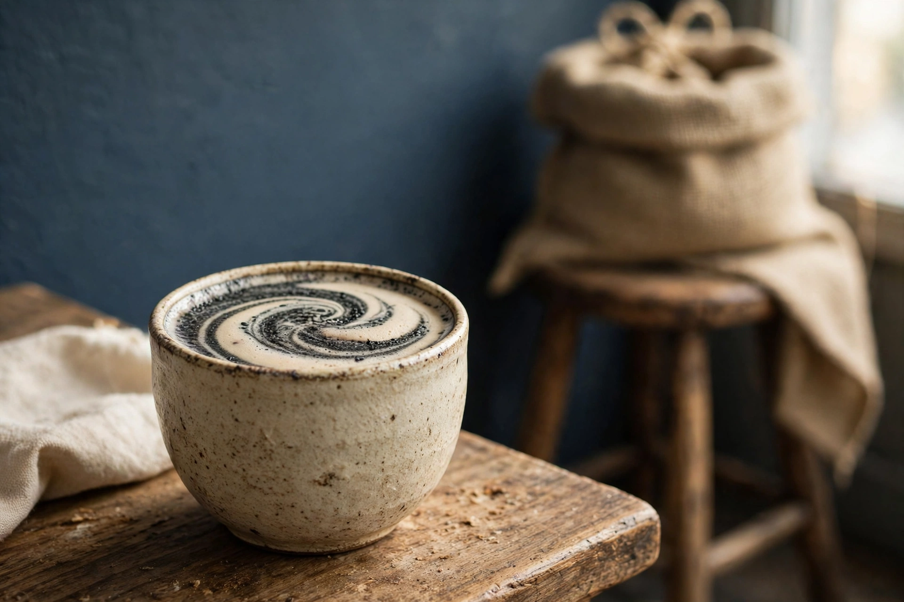
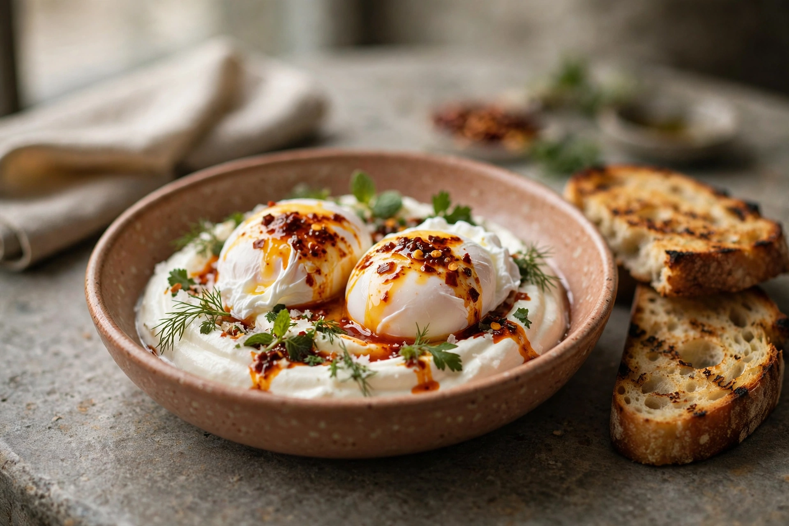
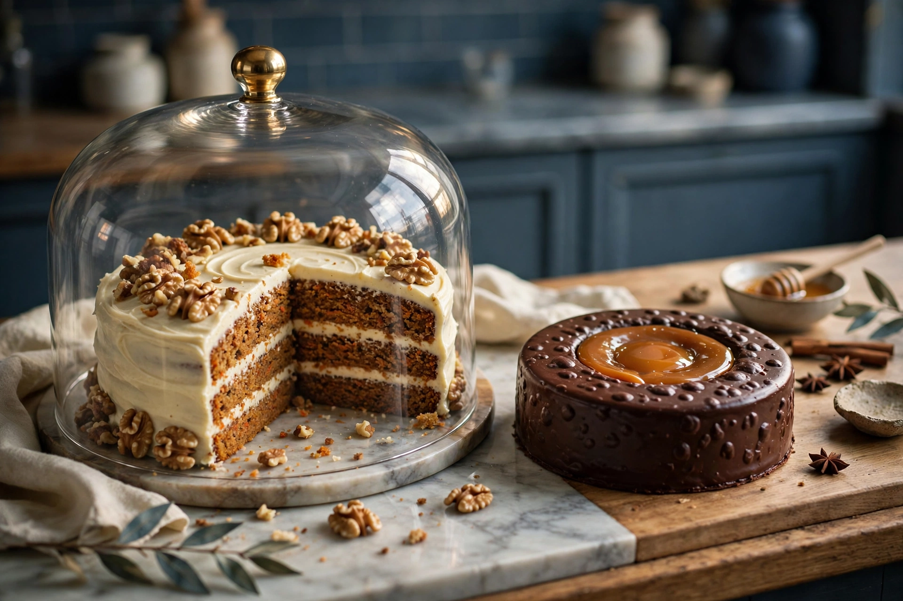
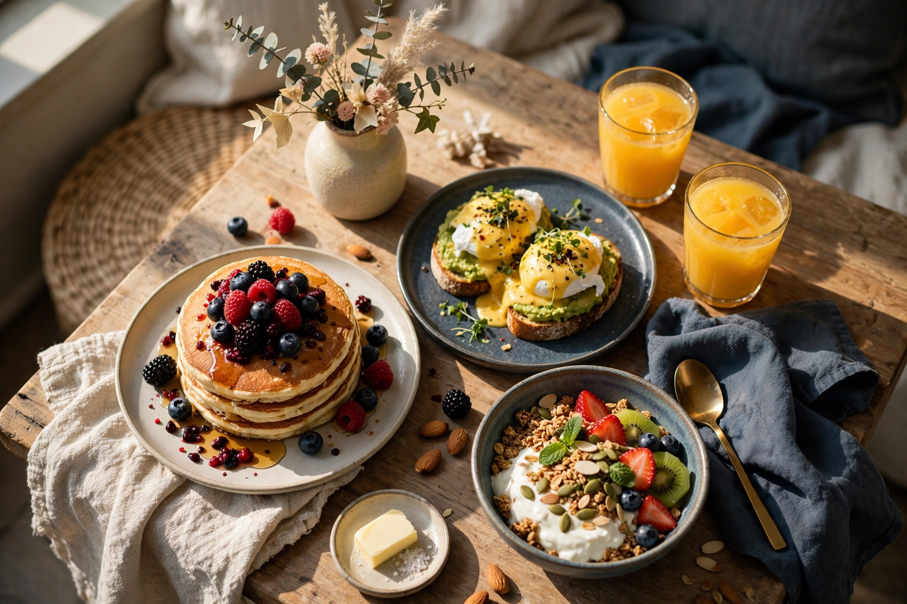
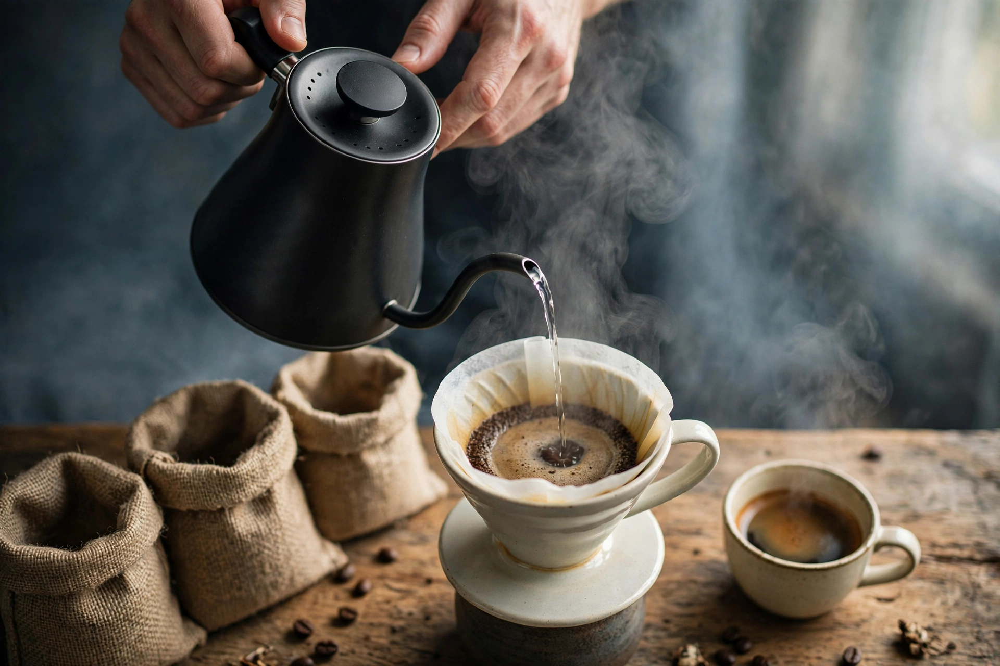
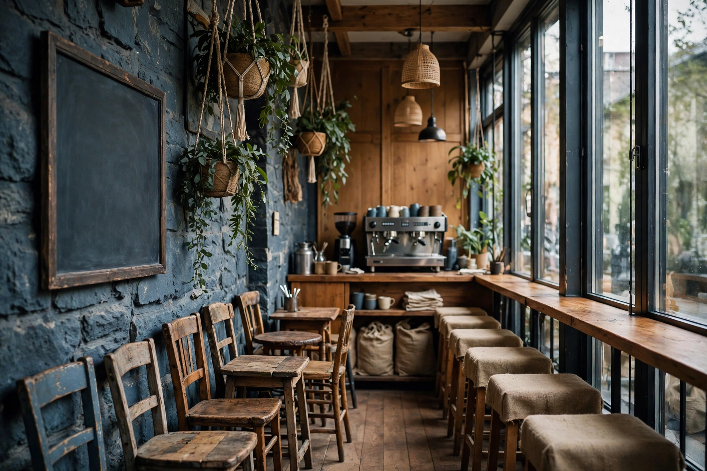

Le matin · dès 9h30
Commencer doucement
Espresso ou filtre du moment, brioche encore tiède, scones au mascarpone et à la confiture.
Café de spécialité à Nantes, depuis 2014
C’est la devise de la maison, et elle la tient : cafés d’origine torréfiés en Bretagne, cuisine maison qui change chaque semaine, et un brunch de saison le premier dimanche du mois, rue de l’Arche Sèche, à deux pas de la place Royale.

Le latte au sésame noir, la signature de la maison.
Le matin · dès 9h30
Espresso ou filtre du moment, brioche encore tiède, scones au mascarpone et à la confiture.
Le déjeuner · la semaine
Une carte courte, faite maison, qui change chaque semaine : quiches, wraps, salades, soupe du jour.
Le goûter · jusqu’à 16h30
Cakes maison, chocolat chaud épicé, et le calme de la pièce pour lire ou travailler un moment.
La signature
La boisson dont les avis parlent en premier : sésame noir, lait soyeux, une douceur légèrement fumée, et cette spirale grise qu’on photographie avant de boire.

Le plat du matin
Œufs pochés sur yaourt à l’ail, beurre au piment, pain grillé pour saucer. Les avis Google les disent « top class » : la maison n’a rien à ajouter.

Côté douceurs
Le Tigré au cœur fondant de caramel, que les habitués signalent comme un détour obligé, et le gâteau aux carottes, là depuis les débuts.
Le déjeuner se compose chaque semaine selon les produits et la saison. Voici ce qui revient, le plus souvent, au comptoir et sur l’ardoise.
Les prix sont affichés au comptoir : la carte change trop souvent pour être figée ici. Allergie ou régime particulier ? Dites-le à l’équipe : la cuisine s’adapte quand elle peut.

Le reste du mois, le week-end, la maison se repose. Mais le premier dimanche, Sugar Blue ouvre pour un brunch de saison : produits frais et locaux, assiettes généreuses (pancakes, toasts Bénédicte & avocat, granola, smoothies), composées selon le moment de l’année.
La date et les horaires sont annoncés sur Instagram. Pensez à appeler : les places partent vite.

Depuis l’ouverture, les grains viennent de chez Caffè Cataldi, torréfacteur breton : deux origines en espresso, une troisième en filtre, moulues à la commande. La presse spécialisée s’en était fait l’écho dès 2014 ; la maison, elle, continue simplement de les servir.
Selon les arrivages : demandez l’origine du jour au comptoir.
Bois, pierre, couleurs chaudes et meubles chinés : la salle s’étire le long de la rue de l’Arche Sèche, entre l’ardoise du jour et les tabourets habillés de sacs de café recyclés.

Faites défiler →
“Turkish eggs & cheese toastie were top class… Coffee was excellent.”
“Everything is delicious and prepared with love.”
4,5
633 avis Google, et un titre de n°1 des cafés de Loire-Atlantique sur Wanderlog.
Sugar Blue
4 rue de l’Arche Sèche
44000 Nantes
Rue piétonne, à deux pas de la place Royale, la Tour Bretagne marque l’autre bout de la rue.
| Du lundi au vendredi | 9h30-16h30 |
| Samedi | Fermé |
| Dimanche | Fermé, sauf le brunch du premier dimanche du mois |
Horaires selon la fiche Google du café. Un autre annuaire public affiche 9h00-17h00 : en cas de doute, un appel ou le compte Instagram confirme.